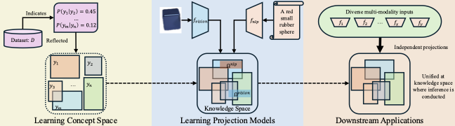
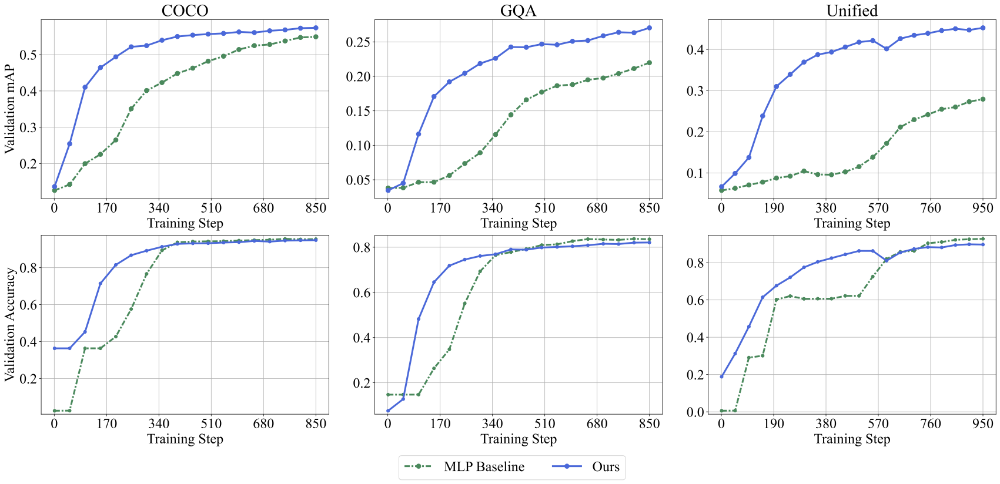
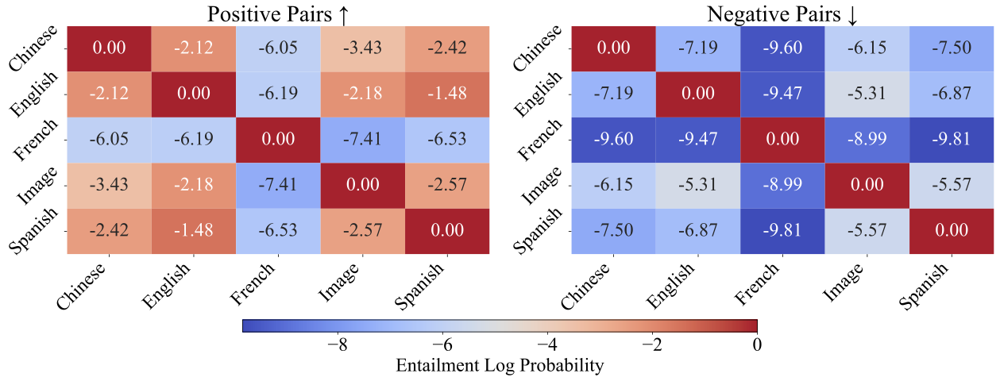

|
A Concept-Centric Approach to Multi-Modality Learning 1School of Electrical and Computer Engineering, Cornell University TL;DR: Humans reuse knowledge across modalities and tasks. This project builds ML systems that do the same by learning reusable concepts in a shared space and connecting multiple modalities through lightweight projection modules. |
|
 Overall architecture: a shared concept space with modality-specific projection modules. |
Modern multimodal models often learn representations that are tightly coupled to a specific set of modalities and tasks. In contrast, our goal is to build a learning system with a persistent store of abstract knowledge that can be reused. We introduce a concept-centric multi-modality learning framework built around a modality-agnostic concept space, together with a set of lightweight projection modules that map each modality into this shared space.
Once the concept space is learned, it can be reused as a knowledge base. New modalities can be added by training only their projection modules, rather than retraining the entire system. We evaluate the framework on two representative downstream tasks and show that knowledge-aware projections can converge faster while maintaining competitive performance, with inference performed entirely in the shared concept space.
The main contribution is a reusable and interpretable learning system, not a small improvement on a single benchmark. The framework separates persistent conceptual knowledge from modality-specific perception, enabling modular extension and concept-level probing.
The system learns a concept space that represents structured, modality-agnostic knowledge. Each modality is paired with a projection module that aligns its inputs to the shared space. After training, the learned concept space can be reused, and adding a new modality requires training only a new projection module while keeping the existing knowledge fixed.
From transient to persistent: Many models store knowledge implicitly in dense parameters and activate it only in response to inputs. Our framework stores abstract knowledge explicitly in a shared space, making it durable and reusable.
Cross-modality reuse: Once the concept space is learned, modality-specific modules can align to it instead of relearning representations from scratch, which supports efficient adaptation.
Interpretability by design: Concept-level representations and relations can be inspected through direct queries, enabling transparent analysis and targeted debugging.
|
 Learning curves: projection modules converge faster by aligning to a shared concept space rather than learning representations from scratch. |
|
 Out-of-the-box alignment across modalities: although projection modules are trained independently, adapting to the shared concept space yields consistent concept entailment structure across image and multilingual text. |
@article{geng2026concept,
title = {A Concept-Centric Approach to Multi-Modality Learning},
author = {Geng, Yuchong and Tang, Ao},
journal = {Transactions on Machine Learning Research},
year = {2026}
}
Questions? Email yg534@cornell.edu.